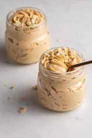

4 Ingredient peanut butter mousse
This 4 ingredient peanut butter mousse makes a small batch, ideal if you only need 2 servings.
It's light and creamy, not too sweet with a bit of a tang, and super easy to make.

Ingredients
- 2 ounces Neufchâtel cheese, softened
- 1/4 cup peanut butter
- 1/4 cup confectioners' sugar
- 1/2 cup heavy whipping cream
Directions
- Beat Neufchâtel cheese, confectioners' sugar, and peanut butter together in a bowl until smooth and well combined. Set aside.
- Place heavy whipping cream in another bowl and whip until medium peaks form. Add peanut butter mixture and whip just until combined.
- Divide evenly into 2 serving glasses. Serve at once, or cover and refrigerate.
Back to homepage